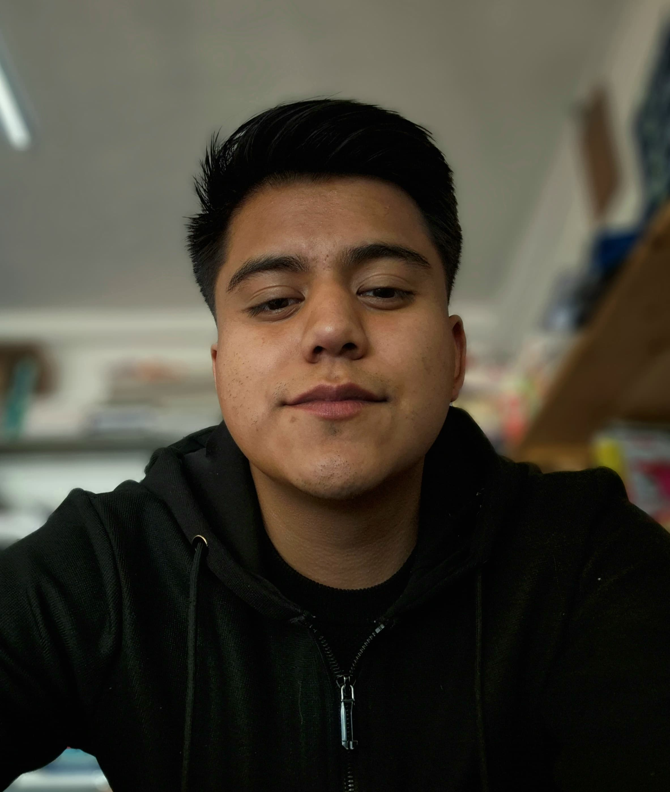

Angel Zuriel Rodriguez Tellez

Soy alumno de diseño grafico en la en la Faculta de Arquitectura, donde ya llevo cursando 7 semestres y hasta el momento estoy comodo con lo que aprendo y puedo llegar a lograr o ejercer. Vengo de un poblado del Estado de Puebla, llamado Libres, Puebla.
Soy un poco selectivo al hacer mis cosas personales, trato de ir variando actividades durante toda la semana, ya que me gusta cocinar, ver videos en YouTube, escuchar musica, hacer mis tareas, ir al gym, salir con mis amigos, estar contestando mensajes, hablar con mis padres, entre otras cosas mas. Pero solo 3 son las que realmente me gusta hacer, las cuales son:
Jugar vieojuegos
Los videojuegos siempre me llamaron la atencion desde muy temprana edad, recordando bien cuando tenia 9 años, siempre que veia a mi primo jugar su consola, siempre me invitbaba a su casa y yo feliz iba y me sentaba a lado de él para ver como le hacia y yo iba aprendiendo. A lo largo de los años se fue convirtiendo en gusto grande, ya que me ayuda a estar en paz cpnmigo mismo ya que es una actividad que disfruto, eso si, trato de no exederme para no lastimarme la vista. En lo particular me gustan mucho los juegos de roll o de acción, siento que eso activa algo en para explorar ciertos gustos o solamente estar entretenido con algo.
Ir al GYM
Hacer deporte es una de las actividades que cualquier persona debería hacer regularmente a lo largo de su vida. Y aunque es algo más que obvio, recomendado por médicos y distintos especialistas en salud, no todo el mundo lo tiene tan claro.Es algo que me gusta hacer, trato de dar un cierto espacio o tiempo, eso si no trato de exederme ya que no quiero ocasionarme alguna lesión. En lo personal quiero mejorar un poco mi cuerpo, tener una mejor resistencia y algo de masa muscular, cuando voy siempre hago de 1 hora y 30 mintos, donde inicio con cardio y ya de ahí me paso a ahacer mi sets, donde trato de entrenar en un día algunas ciertas partes de mi cuerpo.
Jugar baloncesto
El baloncesto es una actividad familiar que todos mis tios lo juegan, desde chico fue algo que me inculco mi papá, ya que queria que yo siguiera sus pasos en este deporte; ya que le gustaba mucho, él tenia 2 equipos de baloncesto, uno donde jugaba él y uno donde era couch y claro yo estaba en ese equipo, me gustaba mucho jugar ya que me sentia comodo porque estaban mis compañeros y un primo y haciamos buen equipo. Ya cuando me adentre más a este deporte, veía a mi papá ver partidos de baloncesto en la televisión y hubo un jugador en especial que me llamo mucho la atención se llama, me encantaba su ritmo de juego, el comop controlaba los saltos y hasta como pasaba los balones a sus compañeros de equipo, cuando lo conocí él estaba jugando con los los Cavaliers del 2003 al 2010. Al final de su primera temporada regular, fue nombrado "Novato del año de la NBA", siendo el primer Cavalier en recibir este premio y el jugador más joven en la historia de la liga. Acabó el año con un promedio de 20,9 puntos, 5,5 rebotes y 5,9 asistencias por partido. Desde entonces lo eh seguido porque me inspira demasiado.